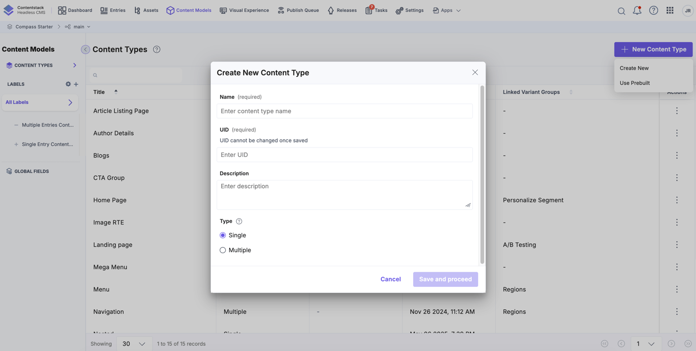
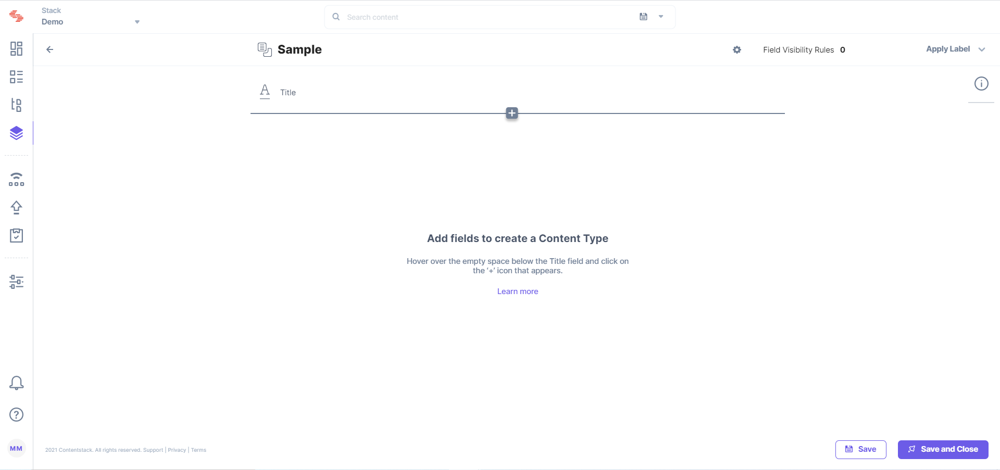
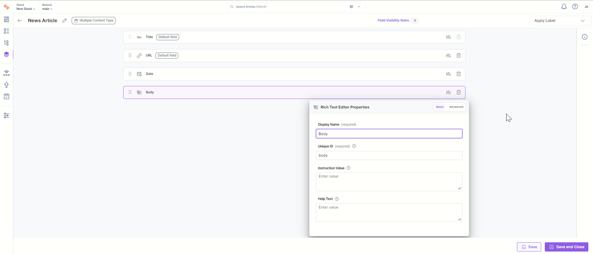
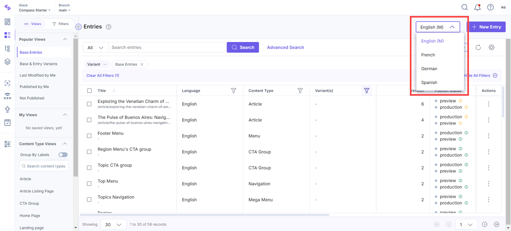
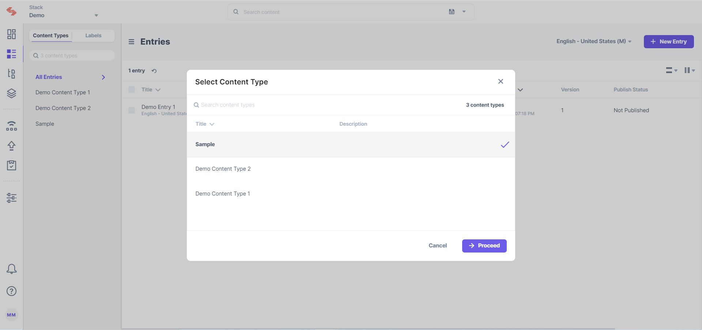
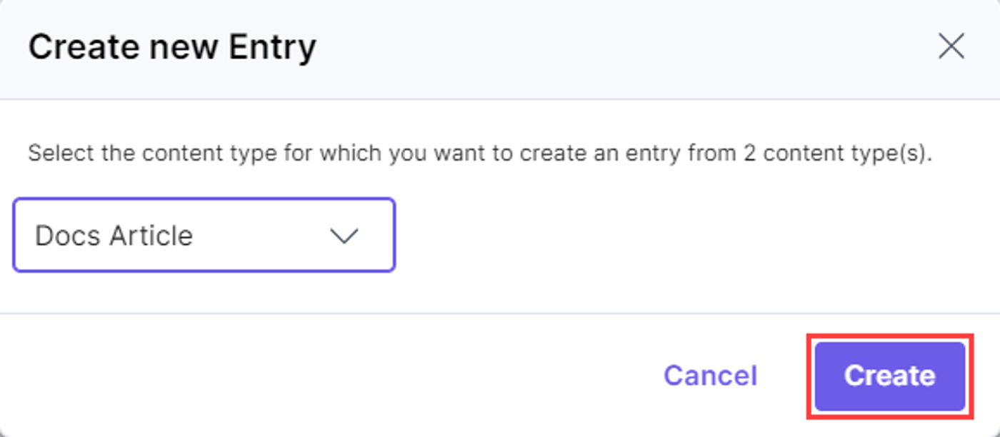
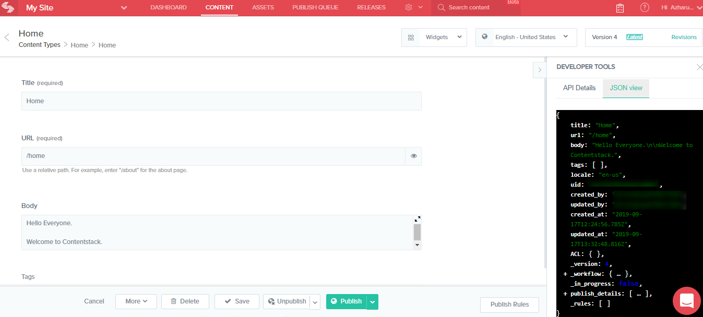
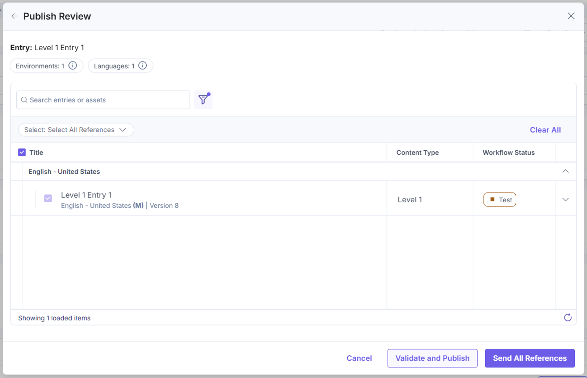
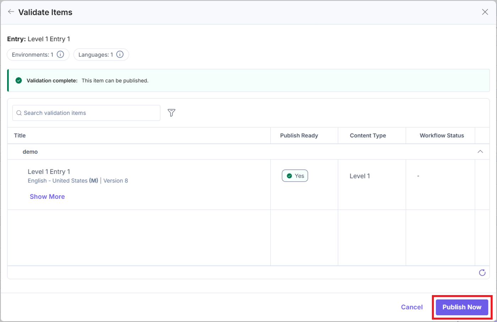

Contentstack CMS — labeled screens for QA
1. Top navigation — where you are
Every official screenshot uses this bar. Learn the names before you click anything.

12345678910- 1. Dashboard — activity overview. Not the Entries list.
- 2. Entries — filled content. This is the daily QA dashboard.
- 3. Assets — images/PDFs. They have their own publish lifecycle.
- 4. Content Models — blank forms (schema). Changing Unique ID here breaks the site.
- 5. Visual Experience — Visual Builder / canvas. Looks like the website. It is not proof of Delivery API.
- 6. Publish Queue / Releases / Settings — jobs, campaign boxes, environments, tokens, languages.
- 7. Name — editor label. Safe to change later.
- 8. UID — API name. Docs say: cannot be changed once saved. Testers query this, not the Name.
- 9. Type Single vs Multiple — Single = one entry (header, homepage). Multiple = many (products, articles).
- 10. Save and proceed — opens the Content Type Builder. Does not create an entry.
product, Type is Multiple.”2. Content Type Builder — the visual content model
This is the blank form. You are not writing a product yet. You are deciding which boxes the form will have.

123456- 1. Back — returns to the Content Types list.
- 2. Content type title (Sample) — click the gear beside it for type-level settings.
- 3. Field Visibility Rules — hide/show fields from other field values. High bug area in UAT.
- 4. Title — default field. Always exists. Used as the name in the Entries list.
- 5. + Insert a field — hover under Title and click plus. This adds SKU, price, reference, modular blocks, and so on.
- 6. Save / Save and Close — saves the schema, not an entry. The website does not change.
3. Fields — Display Name vs Unique ID
Official News Article example. The purple box is field properties (the gear).

12345678- 1. Title — Single Line Textbox. Default field. Display name for the entry.
- 2. URL — default path field. CMS does not create the website route; the app does.
- 3. Date — date/time. Timezone is usually an app concern.
- 4. Body — Rich Text / JSON RTE. Highlighted because its properties are open.
- 5. Display Name =
Body— what editors see. Safe to rename. - 6. Unique ID =
body— JSON key. Frontend and tests use this. Never rename after wiring. - 7. Instruction / Help text — editor hints. Not shown on the shopper site.
- 8. Save — still schema only. Open the gear on every field and check Mandatory, Unique, and Localize.
| Property testers open | What to check |
|---|---|
| Mandatory | Can editors save a draft without it? Required-too-early causes workflow deadlock. |
| Unique | SKU and slug usually on. Duplicate SKU is a defect. |
| Localize this field | On for title/body. Off for sku, price, slug unless the project says otherwise. |
| Multiple | List fields. Empty list vs missing key in JSON. |
| Default value | Boolean default false vs unset. |
price is 129. Display Name can say Product price. I do not file bugs on the label.”4. Entries list — the content dashboard
Left menu Entries. This is where QA spends most of the day. It is not the marketing Dashboard.
 12345678
12345678
- 1. Entries in the top nav — you are on the content dashboard.
- 2. Language — locale of the list (
en-usis notfr-fr). - 3. + New Entry — creates a filled form from a content type.
- 4. Title — entry name. Search and defects use this plus Entry UID.
- 5. Entry ID —
blt…. Copy this when you call CDA. - 6. Content Type — which form it uses (Article, Product).
- 7. Version / Draft tag — unsaved or newer than published. Draft ≠ live.
- 8. Publish Status — which environments it is on (preview, production). Workflow stage is a different column.

12345- 1. Locale dropdown — English (M) = master. Switch to French/German to test translations.
- 2. Content Type Views — filter to Article, Home Page, CTA. Use this before you say “it is missing.”
- 3. Publish Status dots — green next to preview/production means published there. No dot = not on that environment.
- 4. + New Entry — same as above.
- 5. Stack + branch (Compass Starter / main) — confirm you are not in the wrong stack before you file a bug.
5. Create Entry — pick the form, then fill it

1234- 1. + New Entry opened this modal.
- 2. Select Content Type — you are picking the blank form (Sample), not typing the product yet.
- 3. Proceed — opens the entry editor (Title, URL, body, references).
- 4. Publish Status on existing rows — “Not Published” means Save happened, CDA is still empty.

12- 1. Content type dropdown — another Create Entry dialog (Docs Article). Same idea: pick the schema first.
- 2. Create — opens the editor. After save, this is still a draft until you Publish.
6. Entry editor + Developer JSON
This is the filled form plus the JSON the website will map. Visual Experience / Preview can look “right” while this JSON is still old.
 12345678910
12345678910
- 1. Content Types > Home — single-type entry (one Home).
- 2. Widgets / Visual Experience — canvas edit. Treat as Preview, not CDA.
- 3. Locale — English - United States. Always write the locale in the defect.
- 4. Title (required) — Display Name. JSON key is usually
title. - 5. URL (required) —
/home. App routing, not a CMS page. - 6. Body — rich/long text. Same value must appear in JSON
body. - 7. Developer Tools → API Details — copy the CDA URL. Add environment + delivery token yourself.
- 8. Get this entry / Get all entries — QA evidence. Do not sign off the site from Preview only.
- 9. Save — new version, still draft for CDA.
- 10. Publish — choose environment + locale. This is the action that changes the shopper API.

12345- 1. Title field value Home — must match JSON
title. - 2. URL field /home — must match JSON
url. - 3. JSON view tab — Layer B evidence. If JSON is right and the page is wrong, that is a frontend mapper bug (Layer C).
- 4. Keys testers quote —
title,url,body,locale: en-us,_version. - 5. uid / publish_details — system fields. Use uid in CDA. publish_details tells you environment + time.
7. Publish — environments, locales, children

1234567- 1. Publish Review — last screen before content can appear on an environment.
- 2. Environments: 1 — hover/open this. Labs: staging only. Production = live shoppers.
- 3. Languages: 1 — must match the locale you tested.
- 4. Version — “Version 8” is what you publish. Say the version number in the bug.
- 5. Workflow Status — editorial stage (Test / Draft / Approved). Approved is still not live.
- 6. Validate and Publish — checks referenced entries and assets.
- 7. Send All References — parent + children. Sending the parent alone causes empty cards (CS-CMP-01).

1234- 1. Validation complete — mandatory fields and references passed. Still check the environment list.
- 2. Locale + Version — English - United States (M) | Version 8.
- 3. Publish Ready = Yes — if No, expand “Show more” for the failing child or asset.
- 4. Publish Now — this is the click that changes CDA. Not Save. Not workflow Approved.
8. Environments — not folders
 12345
12345
- 1. CMS — where you Save. Shoppers never see this by default.
- 2. Development — developers. Own delivery token.
- 3. Staging — QA + editorial UAT. Your usual publish target.
- 4. Production — live. Staging token never proves production.
- 5. End users — only content published to production (and fetched by the production app).
In the real CMS this list lives at Settings → Environments. Each row is a publish destination, not a folder of drafts.
9. Visual Experience vs Delivery API
The top nav item Visual Experience (and “Edit in Visual Builder” on an entry) is a canvas that can show drafts.
10. One-page QA walk (every new template)
- Content Models — Unique IDs stable? Localize / Mandatory / Unique correct?
- Entries list — locale, publish status dots, workflow stage, version
- Open entry — required fields, references, assets
- Publish Review — staging only, correct locale, validate children
- Developer JSON + CDA — same values,
include[]resolved - Website — after cache SLA
Images © Contentstack Docs, used here to train testers to read the real UI.